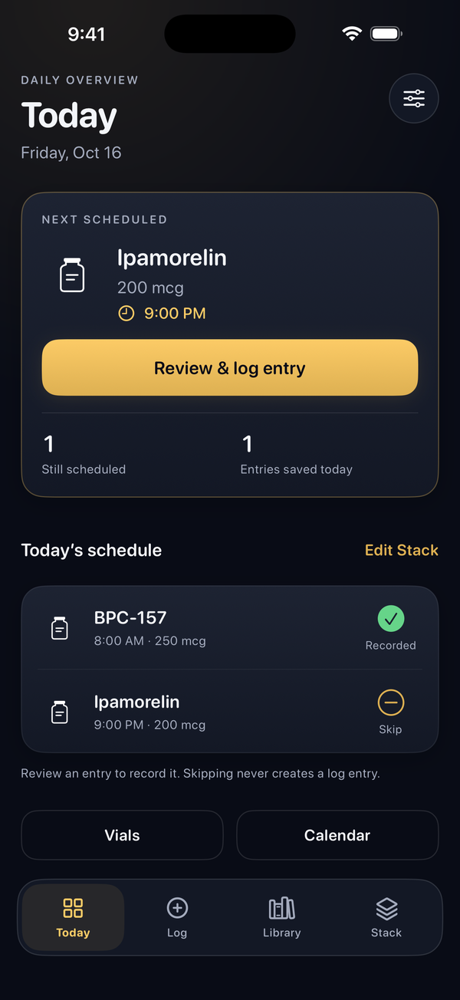
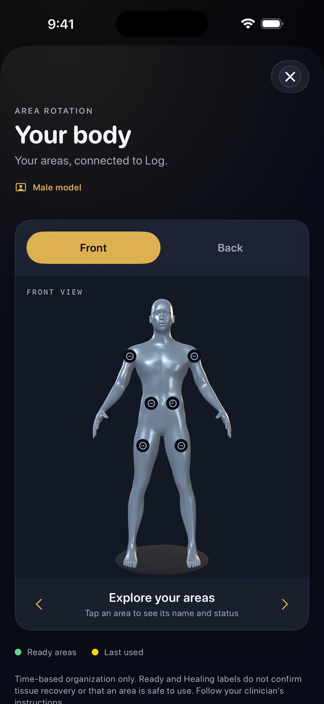
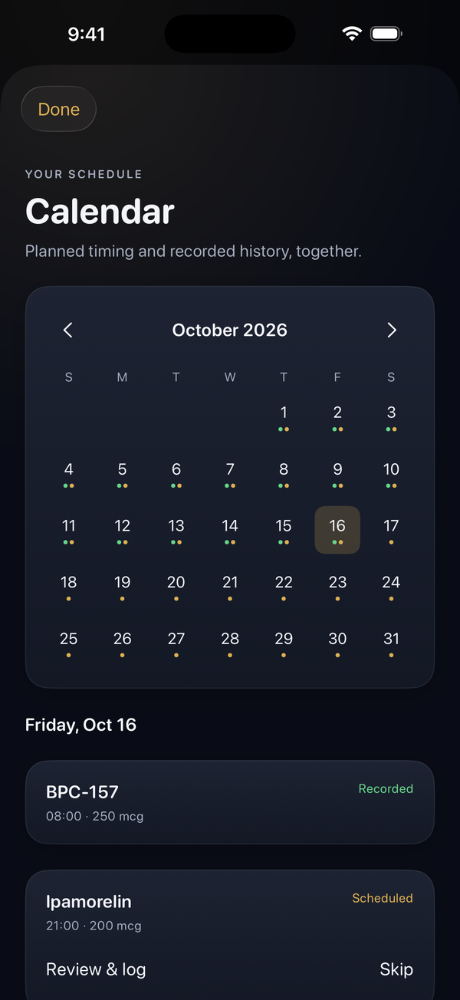
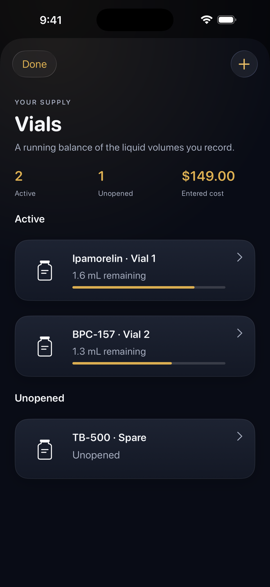

Schedule & reminders
Set weekdays, dates or intervals, pause when you need to, and see scheduled, recorded and skipped entries in Today and Calendar. Optional reminders and Home Screen widgets.
FOR IPHONE · PRIVATE JOURNAL
PeptideBro: Peptide Tracker keeps your schedule, saved entries, injection-area rotation and vials in one place on your iPhone. No account needed.

Set weekdays, dates or intervals, pause when you need to, and see scheduled, recorded and skipped entries in Today and Calendar. Optional reminders and Home Screen widgets.
Explore a 3D body map and see which injection areas you used recently, based on the timing in your log. Organizational labels, not medical clearance.
Record a vial's starting volume and the liquid used on each entry. The balance changes only by the numbers you type and your own corrections.
No account, no analytics, no ads in the app. Your journal lives on your device, with optional backup to your own private iCloud — we never receive it.



A personal journal. Not medical advice. PeptideBro records what you enter. It does not recommend or adjust amounts, prescribe schedules, diagnose, treat, or sell compounds. Many compounds referenced are research chemicals not approved for human use. Consult a licensed clinician before starting, stopping, or modifying any protocol.